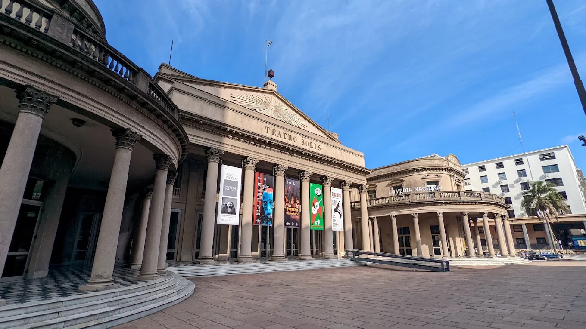
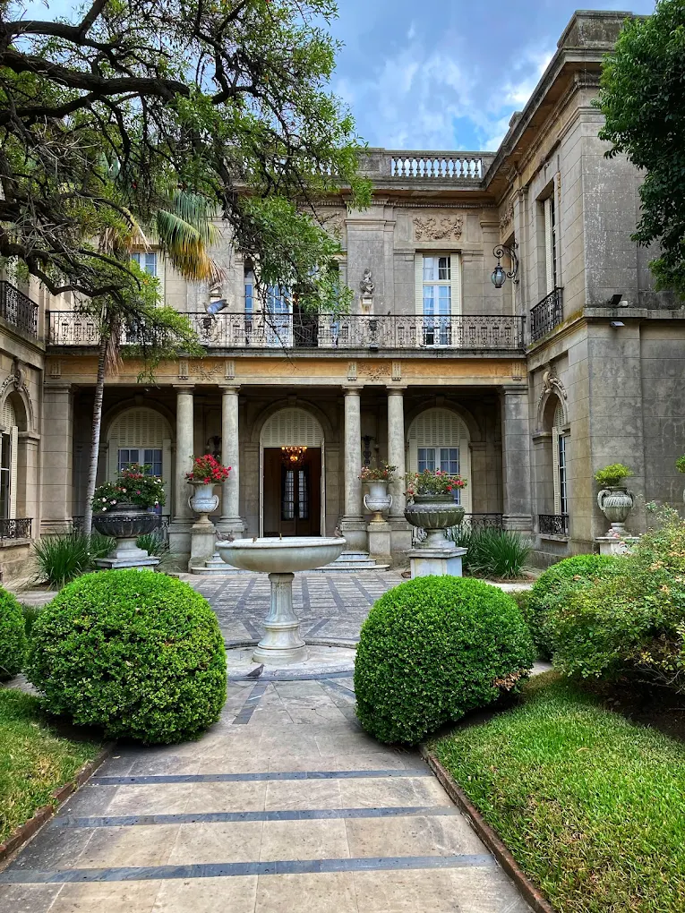
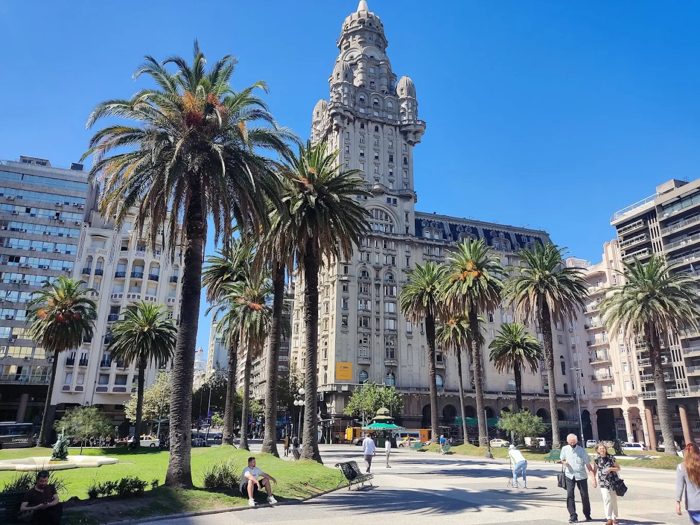
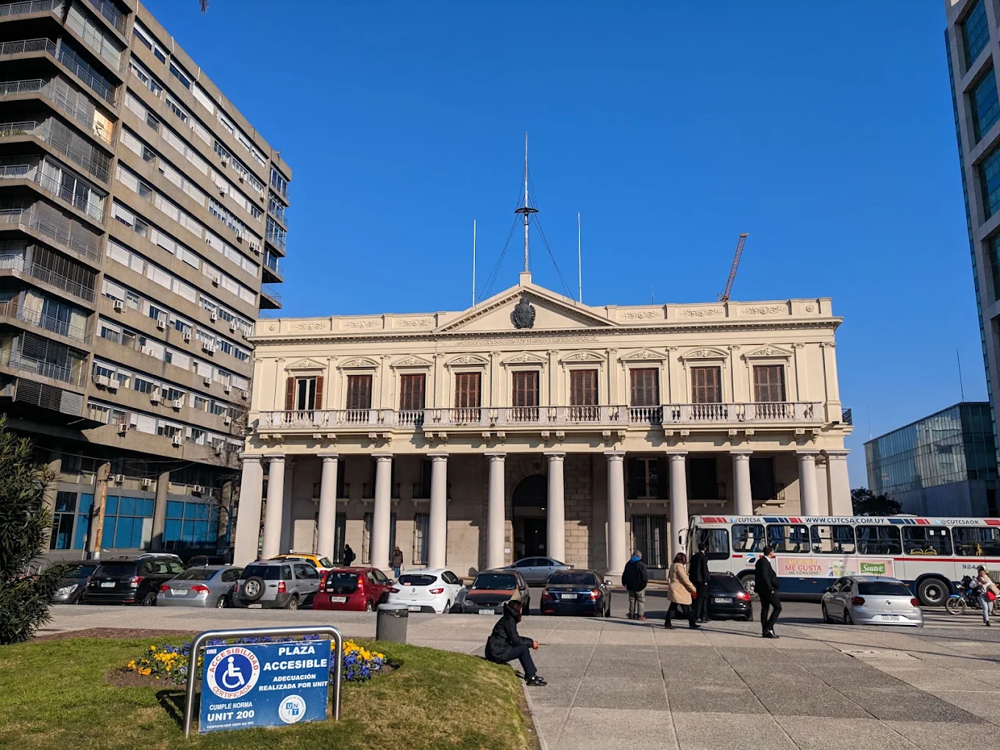
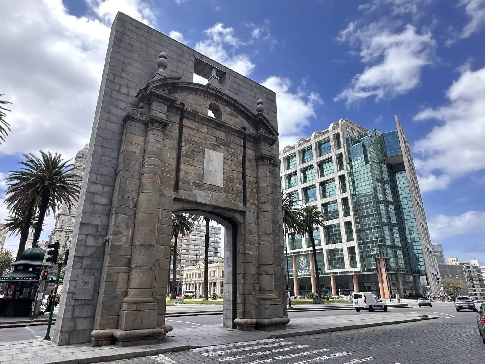
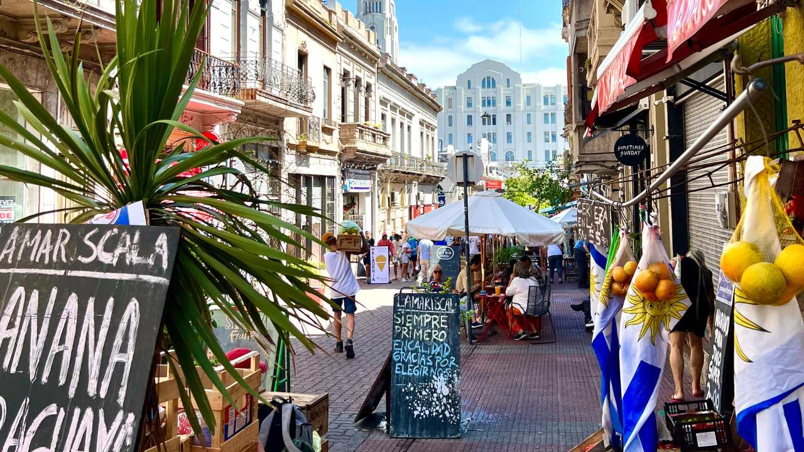
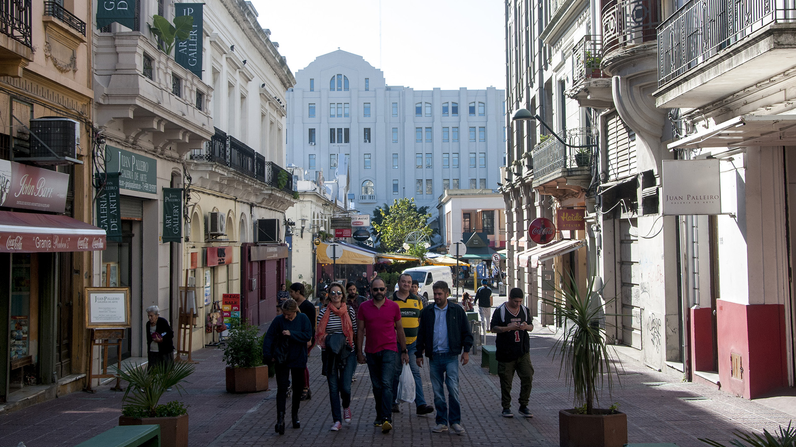
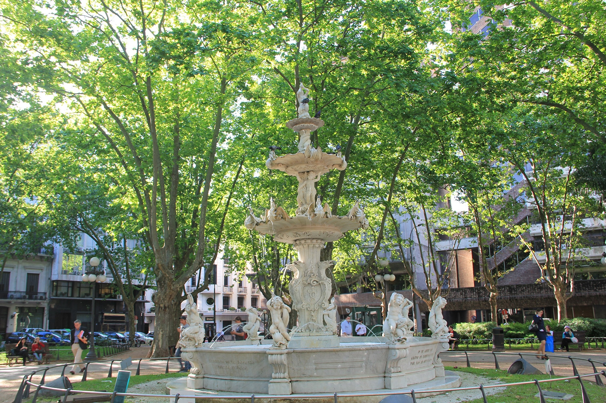
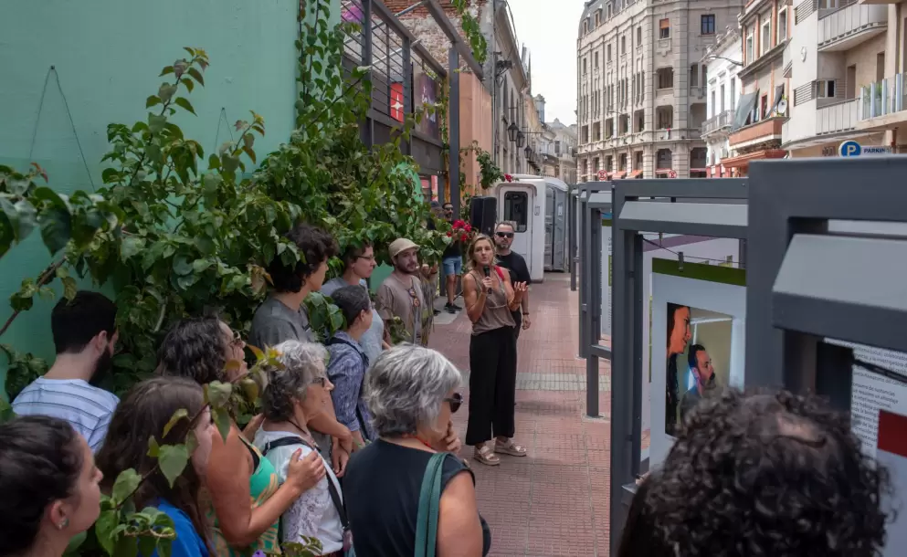

A guided walk through Montevideo's Ciudad Vieja, from Plaza Independencia to Mercado del Puerto.
On request
Discover the magic of Montevideo's Old Town with guides who are passionate about history, culture, and local stories, on a charming walking tour.
The walk begins at Plaza Independencia and continues along lively Peatonal Sarandí and picturesque Bacacay, until you reach the imposing Teatro Solís.
We then head to Plaza Matriz, the colonial heart of the city, and welcoming Plaza Zabala, surrounded by history and calm.
The tour ends at the iconic Mercado del Puerto, where the aroma of asado and local warmth invite you to enjoy the authentic essence of Uruguay.
Watch the reel on Instagram @_sacramentoadventuresDuration is approximate and is not a fixed timetable.
Minimum 5 people.
Meeting point: Plaza Independencia, Montevideo, Uruguay · View meeting point on Google Maps
This experience is on request and requires a minimum of 5 people. Complete your details to inquire.
After you send your inquiry, our team will contact you to confirm details for the Montevideo Old Town Walking Tour. This experience is currently on request — no online payment is required at this step.








